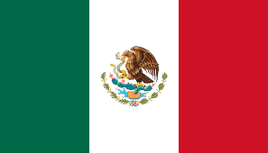
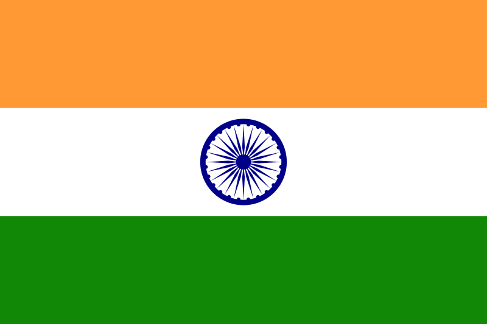

França
- Pontos Turisticos
- Culinaria
- Idioma
- Capital
- Historia
- Populaçao
La historia de Francia comienza en fuentes escritas durante la Edad del Hierro, cuando historiadores romanos llaman a la región la Galia. Esta estaba habitada principalmente por los galos, pueblos de origen celta que no mantenían una unidad política, rivalizaban entre ellos y usaban la escritura de manera marginal. Los galos realizaron varias incursiones fuera de sus territorios originales, entre ellas una invasión a Roma en el siglo IV a.C.
La República romana conquistó el sur de la Galia a finales del siglo II a.C. y estableció la provincia de Galia Narbonense. Julio César anexó el resto de la región durante la guerra de las Galias (58-51 a.C). La conquista trajo consigo una fusión de las culturas celta y romana y finalmente la romanización de los galos y la plena integración del territorio dentro del Imperio romano.
En los últimos años del Imperio Romano, la Galia fue escenario de constantes incursiones de pueblos germánicos, de entre los cuales los francos llegarían a dominar el territorio desde el siglo V hasta el siglo XV. La primera dinastía franca fue la de los merovingios, quienes con su rey Clodoveo unificaron la Galia. La segunda dinastía, los carolingios, fundada en 751, construyó un imperio en Europa occidental bajo Carlomagno en los siglos VIII y IX. Este imperio quedaría dividido entre sus nietos en 843 por el tratado de Verdún, que separó Francia Occidental de Francia Oriental, la cual se convertiría en antecesora de Alemania. La tercera dinastía franca, la de los Capetos, se hizo del poder en Francia Occidental desde 987. Los Capetos, originalmente con escaso poder sobre los señores feudales, lo incrementaron considerablemente gracias a sus campañas militares y su alianza con la Iglesia. En el siglo XII, Felipe Augusto fue el primero en ser nombrado "rey de Francia" en lugar de "rey de los francos". Felipe IV (1268-1314), el más poderoso rey de los Capetos, logró el dominio sobre el papa y la Iglesia.
Italia
- Pontos Turisticos
- Culinaria
- Idioma
- Capital
- Historia
- Populaçao
La historia de Italia está íntimamente ligada a la de la cultura occidental y a la historia de Europa. Buena parte de los principales acontecimientos históricos del mundo occidental, así como muchos de los logros que han condicionado la cultura universal, han tenido lugar en el país o los han protagonizado sus pueblos.12
Heredera de múltiples culturas antiguas, como la de los etruscos y de los latinos, receptora de la colonización griega y hogar de la Magna Grecia, fue cuna de la civilización romana y vio nacer la República y el Imperio romano, legador de gran parte de la cultura occidental y uno de los mayores de la historia, del cual Italia fue el centro absoluto, tanto político como económico y cultural.34
Tras la caída del Imperio romano de Occidente, Italia sufrió una serie de invasiones germánicas, alternadas con intentos bizantinos y francos de reconstruir la unidad del Imperio romano. Roma, sede del papado y fuente de legitimidad imperial, fue en esos tiempos un foco que atrajo a figuras como Justiniano I y Carlomagno.56
Durante la Edad Media, Italia se convertiría en un mosaico de Estados y ciudades-Estado (llamadas liberi comuni) a menudo en lucha entre sí para conseguir la hegemonía sobre el resto, con frecuentes intervenciones de las potencias circundantes y de la Santa Sede que, a través de la figura del papa en calidad de soberano, gobernaba buena parte del centro de Italia en el territorio conocido como Estados Pontificios, con capital en Roma.
Mexico
- Pontos Turisticos
- Culinaria
- Idioma
- Capital
- Historia
- Populaçao
La historia de México es la narración cronológica y demostrable de los acontecimientos del pasado relacionados con los seres humanos habitantes en el actual territorio de México, país ubicado en América del Norte.
Dicha narración puede dividirse de distintas maneras según la perspectiva historiográfica para abordar los hechos y de sus criterios.1Una división propia del país en tres grandes periodos es la siguiente: época prehispánica, española e independiente.2
El periodo prehispánico se refiere a todo lo acontecido antes de la llegada de los españoles en 1519. En dicho periodo ocurrió el poblamiento del territorio, el inicio de la agricultura y la conformación del sedentarismo en tres grandes áreas culturales: Aridoamérica, Oasisamérica y Mesoamérica. La última mencionada fue en la que se desarrollaron más civilizaciones, debido a sus condiciones geográficas.
El periodo español sucede al prehispánico y abarca hasta la consumación de la guerra de Independencia en 1821, lapso que duró tres siglos. Se caracterizó por el dominio de la monarquía española iniciado con la Conquista y formalizado política y territorialmente en el Virreinato de Nueva España.
Finalmente, el periodo independiente que actualmente en curso inició con la conformación del Primer Imperio Mexicano y su máxima característica es la existencia del Estado mexicano propiamente dicho que se ha conformado por ambas formas de gobiernos (monarquía y república). Ha sufrido el desarrollo y transformaciones del país.
Argentina

- Pontos Turisticos
- Culinaria
- Idioma
- Capital
- Historia
- Populaçao
La historia de la Argentina es la cronología de sucesos desde el comienzo del primigenio poblamiento humano en el actual territorio de la República Argentina hasta nuestros días.
Se inicia con los vestigios más antiguos de seres humanos en suelo argentino, detectados en el extremo sur de la Patagonia, que datan de hace unos 13 000 años. Las primeras civilizaciones agroalfareras se establecieron en el noroeste andino desde el siglo xviii a. C.
La historia escrita de lo que es la Argentina, comenzó con los registros del cronista alemán Ulrico Schmidl en la expedición de Juan Díaz de Solís en 1516 al Río de la Plata, hecho que anticipa la dominación española que se impondría en parte de esta región.
En 1776 la corona española creó el Virreinato del Río de la Plata, entidad aglutinadora de territorios a partir de la cual, con la Revolución de Mayo de 1810, comenzaría un proceso gradual de formación de varios Estados autónomos —llamados provincias— o independientes, entre ellos el que llevó el nombre de Provincias Unidas del Río de la Plata.
Con la declaración de la independencia el 9 de julio de 1816 y la derrota militar del Imperio español en 1824 se formalizó la existencia soberana. En 1833 el Imperio británico tomó posesión de las Islas Malvinas que entonces era una comandancia militar de las Provincias Unidas, cuya devolución ha reclamado la Argentina desde entonces.
Tras un prolongado período de guerras civiles, entre 1853 y 1860 se aprobó una república federal con el nombre de República Argentina. Mediante guerras contra los pueblos mapuche, tehuelche, ranquel, wichi y qom, conocidas como Conquista del Desierto y Conquista del Chaco, la República Argentina tomó posesión de las llanuras chaqueña y pampeana y de la Patagonia oriental, conformando su territorio actual, el octavo más extenso del mundo.
India
- Pontos Turisticos
- Culinaria
- Idioma
- Capital
- Historia
- Populaçao
La historia de la India en la época precedente a 1950 es inseparable de la historia del subcontinente indio, al cual pertenece esta nación. Incluye los asentamientos y las sociedades prehistóricas en la región, la avanzada civilización del valle del Indo y la fusión de la cultura indoaria para formar la civilización védica;1 el origen del hinduismo, del jainismo y del budismo;23 la sucesión de poderosas dinastías e imperios durante más de tres milenios en varias áreas del subcontinente que incluye el crecimiento de dominios musulmanes interconectados con las potencias hindúes;45 la llegada de los comerciantes europeos que dio como resultado el establecimiento de la India Británica, y el subsecuente movimiento de independencia que condujo a la partición de la India y a la creación de la república de la India.6
La civilización del valle del Indo, considerada una civilización originaria,7 que se extendió y floreció en el noroeste del subcontinente indio entre 3300 y 1300 a. C., fue la primera gran civilización del sur de Asia.8 Durante el período Harappense, entre 2600 y 1900,9 que desarrolló una cultura urbana tecnológicamente avanzada. Esa civilización colapsó a inicios del II milenio a. C. y fue sucedida por la civilización védica de la Edad del Hierro. En esa era se compusieron los Vedas, textos seminales del hinduismo, se formaron los janapadas (entidades políticas monárquicas) y la estratificación basada en castas. La civilización védica tardía se extendió sobre la llanura indogangética y gran parte del subcontinente, y fue testigo del surgimiento de estados mayores conocidos como mahajanapadas. En Magadha, uno de estos reinos, Buda Gautama y Mahavira propagaron sus filosofías shramánicas durante los siglos V y VI a. C.
Gran parte del subcontinente fue conquistada por el Imperio Maurya durante los siglos IV y III a. C. Desde el siglo III a. C. la literatura prácrita y pali en el norte y la literatura sangam en el sur comenzaron a florecer.1011 El acero wootz se originó en el sur de la India en el siglo III a. C. y se exportó al extranjero.121314 Durante el período clásico, varias partes de la India fueron gobernadas por numerosas dinastías durante 1500 años, entre las que destaca el Imperio gupta. Este período, testigo de un resurgimiento religioso e intelectual hindú, se conoce como la «era dorada de la India». En este período varios aspectos de la civilización, administración, cultura y religión indias (hinduismo y budismo) se expandieron a gran parte de Asia, mientras que los reinos del sur de la India mantenías lazos marítimos con el Medio Oriente y el Mediterráneo. La influencia cultural india se extendió a muchas partes del sureste asiático, lo que ocasionó el establecimiento de reinos indianizados en esa región.